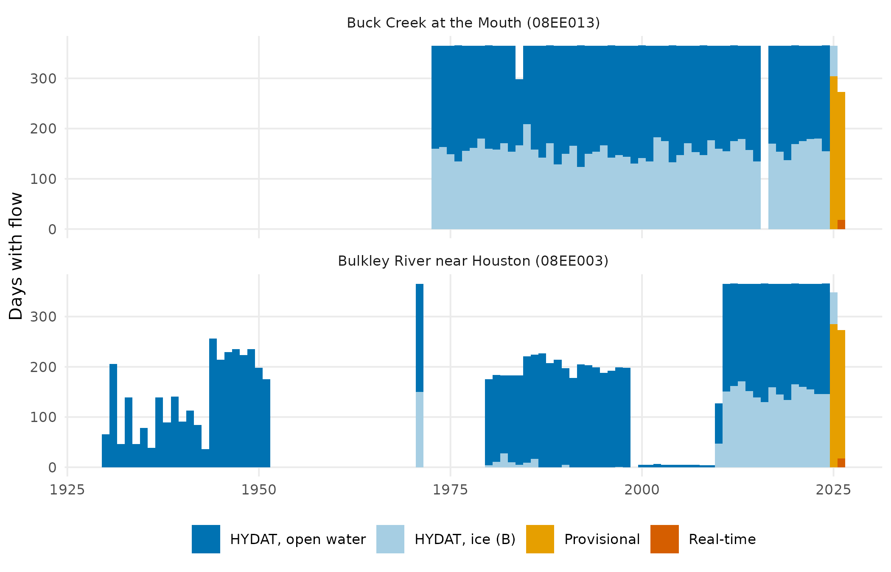

Fish use a river at set times of year: Chinook migrate up in early summer and spawn in late summer, and their eggs incubate in the gravel through winter. A low-flow year matters most when it falls inside one of those windows. This vignette takes two hydrometric stations in the Bulkley watershed, Buck Creek at the Mouth (08EE013) and Bulkley River near Houston (08EE003), and asks how flow in each species window compares with 1981–2010, and which way it is trending.
The recipe
These are the calls that produced the numbers. They need HYDAT, the water-temp-bc archive and the ECCC real-time feed, so the vignette runs on a cached copy of their output (see Cached inputs, below).
library(wet)
# HYDAT, then ECCC provisional, then real-time, per station
daily <- wet_station_daily(c("08EE013", "08EE003"))
windows <- data.frame(window = c("CH migration", "CH spawning"),
start = c("05-01", "08-01"), end = c("08-01", "09-15"))
stats <- wet_window_stats(daily, windows, stats = c("mean", "min7"))
# departure and trend are cd's, one station per call
buck <- stats[stats$station_number == "08EE013", names(stats) != "station_number"]
departure <- cd::cd_anomaly(buck, cd::cd_baseline(buck, 1981:2010))
trend <- cd::cd_trend(departure, trend_start = c(1981, 2000))What the record is made of
Every number below rests on this record. Approved HYDAT flows end in March 2025; provisional and real-time flows carry it to 30 September 2026. Winters are mostly ice estimates, and one station was a seasonal gauge for most of its history.

Days with flow per year, by source. HYDAT’s ice-affected days (symbol B) are an estimate, not a measurement: 44% of Buck Creek’s approved days. Bulkley River near Houston is gauged through the winter only in 1971 and 2011–2026.
The hydrograph and the windows
This is the key figure. Each recent year is drawn over the 1981–2010 median for that day, with the species windows underneath. In the Chinook spawning window, mean flow at both stations was 58%–81% below its 1981–2010 mean in every year from 2023 to 2026 (the departures below). The dashed winter lines are provisional readings under ice; they are the reason those years are dropped below.

Daily flow, 2023–2026 (lines; dashed where provisional), over the 1981–2010 median and middle half (drawn only on days with at least 10 years). Species windows run beneath. Log scale.
Departure, window by window
Each cell is one window in one year: how far its mean flow sits above or below its 1981–2010 mean, in percent. Two kinds of cell carry no departure. A window at a station with fewer than 10 baseline years has no normal to compare against. And a window touching November–April drops every year with a provisional day: Buck Creek’s provisional December–February means were 6.6–15.0 m³/s, where no approved winter month since 1981 exceeded 3.9 m³/s. The window-years dropped for that reason are at Buck Creek at the Mouth (08EE013), CH incubation 2024–2025; CH emergence 2025–2026; CO spawning 2025; ST spawning 2025–2026; BT incubation 2024–2025; and at Bulkley River near Houston (08EE003), CH emergence 2025–2026; CO spawning 2025. Winter windows also rest on ice estimates: in Buck Creek’s median year, 64% of the BT incubation days and 59% of the CH incubation days are ice-affected.

Window mean flow above or below its 1981–2010 mean, in %. A triangle marks a window-year resting on provisional days. Blank cells have under 80% of their days, or none.
Trends
The slope of each window’s departure, from 1981 and from 2000, for the window mean and its lowest seven-day mean. CH spawning and SK spawning share their dates, so each set counts once. Of 68 distinct slopes, 5 are significant at p < 0.05, where chance alone would give about 3, all of them negative. At Bulkley River near Houston, “from 2000” starts in 2010 or 2011, depending on the window, because it has no window-years from 2000 until then.

Theil-Sen slope of the departure, in percentage points of normal per year, from 1981 and from 2000. Filled where the Mann-Kendall p is below 0.05. A window with no point has under 10 baseline years.
What it does not show
- Provisional winters are ice readings. ECCC’s provisional archive records no ice symbol, so nothing marks those days. The drop above is a rule, not a correction.
- Bulkley River near Houston was a seasonal gauge for most of its record, gauged through the winter only in 1971 and 2011–2026. Its CH incubation, ST spawning and BT incubation windows have under 10 baseline years, so no departure.
- A mean-based normal is skewed by wet years. At Buck Creek the 1981–2010 Chinook spawning mean is 0.91 m³/s, and the median year 0.59 m³/s, so a typical year already reads 36% below normal.
- The windows come from the literature, not from observation. They are Bulkley timings from NGE’s life-history table; 7 of 11 have no source yet and await confirmation with knowledge holders.
Cached inputs. HYDAT release 2026-07-17, with
provisional and real-time flows retrieved 1 October 2026; life-history
table at commit c97c4d0. Regenerated by
data-raw/station_vignette_data.R.